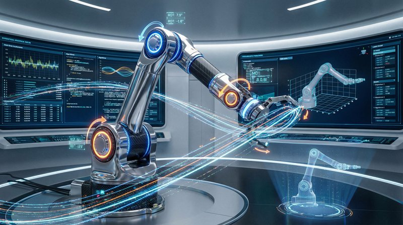
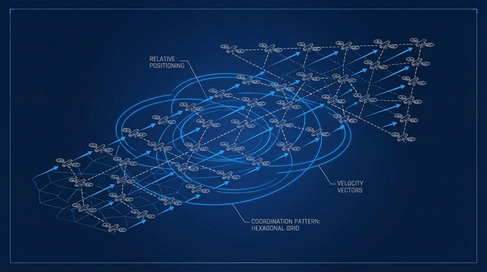

返回课程列表
第六课
振动基础
电机振动控制与结构共振避免
⏱️ 约35分钟
电机运转产生振动，结构共振可能导致破坏。极客项目中的振动问题往往是最后才发现但最难解决的。
电机振动的控制
电机振动来源于转子不平衡、轴承磨损和电磁力波动。减小振动需要精确的动平衡和合理的安装方式。

DIY项目的减振方案
常见的振动控制方法：
- 动平衡：在转子上添加配重消除不平衡，减小振动90%以上
- 软垫安装：橡胶垫圈隔离电机振动向机架传递
- 刚性安装：确保安装座刚度远大于电机振动力，避免共振
- 减振器：在关键位置安装阻尼材料，吸收振动能量
结构共振的识别与避免
当激励频率等于结构固有频率时发生共振，振幅急剧增大。3D打印机的振纹、无人机的抖动往往都是共振导致的。

共振问题的诊断与解决
极客项目中的共振案例：
- 3D打印振纹：打印速度对应的频率与框架固有频率接近时产生
- 无人机抖动：螺旋桨频率与机臂固有频率接近时产生共振
- 解决方案1：改变激励频率（调整电机转速或打印速度）
- 解决方案2：改变固有频率（加强结构刚度或增加质量）